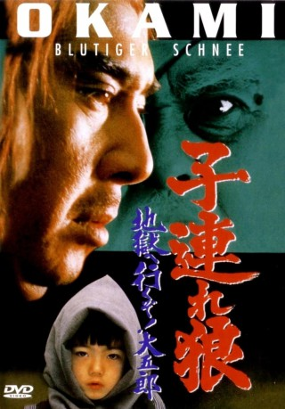
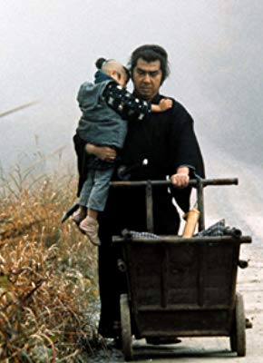

#10252 Okami 6 - Blutiger Schnee *OmU*
 
 IMDB-Wertung: 7.5 / 10
IMDB-Wertung: 7.5 / 10  Metascore: 0
Metascore: 0 
Retsudo Yagyu, das Oberhaupt des Yagyu-Klans, hat bereits drei Kinder in seiner Fehde mit Kozure Okami verloren. Nun schickt er auch seine Tochter Kaori und seinen unehelichen Sohn Hyoei dem einsamen Wolf entgegen. Hyoei ist der Herr der Tsuchigumo, Krieger, die sich an keinen Ehrenkodex halten. Da sie Kozure Okami und Daigoro in einem offenen Kampf nicht besiegen können, töten sie gemäß ihrer Fünf-Räder-Technik der psychologischen Kriegsführung alle, die mit den beiden in Kontakt kommen. Gleichzeitig versucht Retsudo den Shogun dazu zu bringen, Kozure Okami zum Staatsfeind zu erklären. Dann würden ihn und Daigoro jeder Daimyo und jeder Gouverneur in ganz Japan jagen... (Quelle: rapideyemovies.de)
Japanisch mit deutschen Untertiteln
Jahr: 1974
Dauer: 83 Minuten
FSK: 18
Land: Japan Studio: AliveTonspuren:
Untertitel: Deutsch,
Auflösung: 1080p (1920x808) Größe: 5601 MB
Genre: Action, Drama, Abenteuer, Fantasy, Geschichte
Regisseur: Yoshiyuki Kuroda
Drehbuch: Kazuo Koike, Goseki Kojima, Tsutomu Nakamura
Soundtrack: Kunihiko Murai
Darsteller:
 Tomisaburô Wakayama als Ogami Itto
Tomisaburô Wakayama als Ogami Itto-  Akihiro Tomikawa als Ogami Daigoro
- Minoru Ôki als Yagyu Retsudo
- Junko Hitomi als Yagyu Kaori
- Gorô Mutsumi als Iwane Ozunu
- Daigo Kusano als Mudo, ghost warrior
- Jirô Miyaguchi als Muga
 Renji Ishibashi als Mumon
Renji Ishibashi als Mumon- Teruo Ishiyama als Shogun
- Chie Kobayashi als Azusa
- Gakuya Morita als Imanishi Uneme
- Kyôichi Satô als Kiyota Ryunosuke
- Kôji Fujiyama als Tomita Tatewaki
- Yoshiro Takee als Horie Taroemon
- Ryô Nishida als Okada Gonoshin
- Riki Harada als Hatanaka Tamon
- Masataka Wakao als
- Shôji Mori als
- Yasuno Sakai als
- Koji Kanda als
- Yukio Horikita als
- Tokio Oki als Head Clerk
- Matsujiro Konaka als Tsuchigumo
- Seiichi Yoshida als Kurokuwa
- Satsuko Yamamura als
- Yoshihiro Maruo als Tachibana Bunzo
- Seji Katayama als
- Isao Kimura als Tsuchigumo Hyoei
- Masafumi Maeda als Kosho
- Kenji Ushio als Toseinin
- Yukari Wakayama als Maid
- Mayumi Yamabuki als Troubadour Woman
Datei: X:\FSK18-Eastern-Collections\Okami\Okami 6 - Blutiger Schnee OmU (1974, FSK18, 1920x808).mkv seit 27.12.2018
Festplatte: FSK18
 Es gibt insgesamt 9 Filme in der Gruppe 'FSK18-Eastern-Collections\Okami'
Es gibt insgesamt 9 Filme in der Gruppe 'FSK18-Eastern-Collections\Okami'